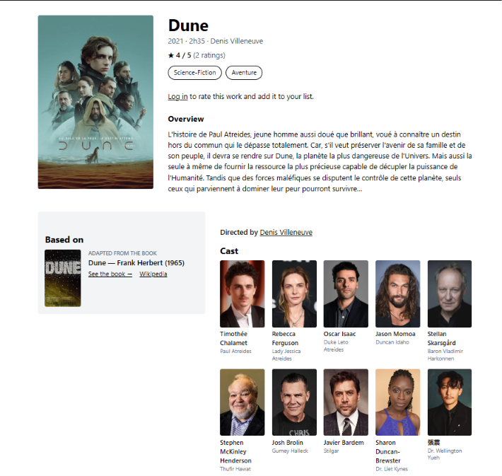
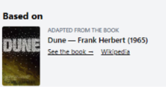
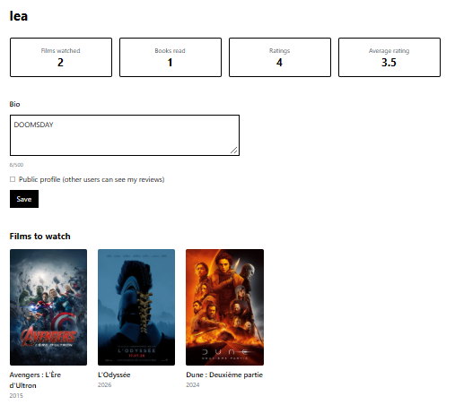

Find, rate and save films
Search any film, see its cast, rate it and add it to your watchlist.

Search any film, see its cast, rate it and add it to your watchlist.

Each film shows the book it comes from, and each book shows its adaptations.

Films watched, books read and your average rating, in one place.
I love cinema and always want to know where a film comes from. I discovered that Prime Time was based on a real TV show, and that Nolan's The Odyssey comes from Homer. I built the tool that would have taught me that while watching.
Built alone in 7 weeks (September to November 2026) as my Portfolio Project at Holberton School.